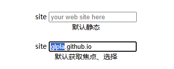
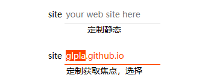

单行文本 text
- 定制 text
- 选择器：:focus、::selection、::placeholder  
单选 radio
- 利用 accent-color，简单粗暴
- 定制 radio - 利用 选中伪类选择器 :checked、相邻兄弟选择器 + ，必要时隐藏 <input>，配合 <label> 和 定位 position，借助文字、图片、字体图标等设计元素实现

多选 checkbox
- 利用 accent-color，简单粗暴
- 定制 checkbox - 思路同 radio

是一个替换元素（replaced element），其内部结构是由浏览器控制的，不允许通过这些伪元素进行自定义
部分系统要求表单元素不能单独使用，必须用在<form>中；还有某些元素如密码，必须指定 autocomplete属性，请注意查看控制台提示信息，如：
xxx field is not contained in a form
Input elements should have autocomplete attributes